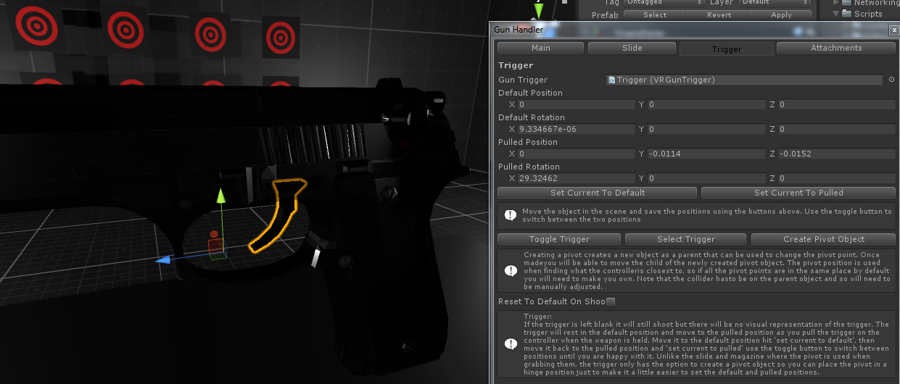
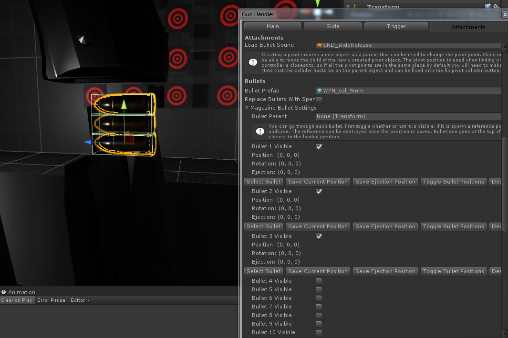

In the scene you must have either the SteamVR camera rig or Oculus Avatar rig with a VRInteractor and VRInput script attached to either or both controller objects. It should add all the scripts it needs.

The VRInteractor and VRInput scripts need to be attached to either or both controllers in order to pick up anything. You are able to configure exactly what you want each controller button to do from here.
Action Settings:
The name of the Actions (ACTION, PICKUP_DROP) corrospond to the method name in the VRInteractableItem or any script that inherits from a VRInteractbleItem.
The method name will be called on either the held or hover item when the key is pressed and the method name plus Released will be called when that key is released.
public void PICKUP_DROP(VRInteractor hand)
public void PICKUP_DROPReleased(VRInteractor hand)
Weapon Reference:
The weapon reference can be used to attached a weapon to a controller at startup. You can use this in conjunction with setting PICKUP_DROP buttons to none which will lock the weapon to your hand permanently.
Step 1: Setting Up The Model.
If you have a weapon that is all one mesh it can still be setup and will work it just won't have any moving parts. If they are separate meshes but are all combined when importing into unity check you modeling programs export settings.
Step 2: Open The Wizard
Once you have a model that is in structure similar to the example pistol you can start the wizard for initial setup. That's in the editor menu under;
VR Weapon Interactor/Weapon Wizard
Step 3: Assign Weapon Parts
The weapon wizard is for assigning a reference to the different parts of the weapon. Even if
there is only one mesh it should just be assign as the gunRoot
Make sure you drag your weapon into the scene before assigning it to the wizard. The
gunRoot is the only required part. Leaving the magazine blank will
create an integrated magazine, primarily for revolver like pistols as
well as alien pistols with no magazine. If it is an external magazine
it is going to make a new seperate object with no parent, you should save
this as a prefab so it can be spawned seperately. The Id is for matching
attachments/magazines and weapons if you have a different gun with a different
attachment/magazine change the id so you can't load the wrong magazine into the
wrong gun. Once you've assign what you need hit setup.
Step 4:
With that done the weapon editor should show up. This is where you can customize all the moving parts and prefab references. At this point you should be able to run the game and pick up the weapon, nothing will move yet, the held position will likely be wrong and it won't shoot but you should be able to pick it up. :)
The bullet wizard is used for making the bullet prefabs, just drag your bullet mesh into the scene open the bullet wizard from VR Weapon Interactor/Bullet Wizard (same place as the weapon wizard), enter the bullet root and bullet id (the bullet id here has to match the bullet id given in the gun or magazine to load) or tick IsCasing for a simple item that can destroy itself. Click setup, make sure to setup the held position by going to the VRBullet object and clicking setup held position (no applicaple for a casing), once done check the collider size looks right and save the bullet as a prefab in your project.

after setup should it look like this with a rigidbody on the root object, Collision objects with box colliders, VRItemCollider scripts and either a VRLoadableBullet script on the VRBullet object or in the case of a casing the VRInteractableItem script and a DestroyIn script on the root object.
You can access the weapon editor from either the weapon root object or the VRGunHandler object. The editor is split into four different tabs; Main, Trigger, Slide and Attachments.
Main Section
Weapon Held Position:
Use this window to instantiate a reference controller and position the weapon model relative to it. The model is made to be a child of the reference controller in the hiearchy, this means you can move the controller object around the scene to get a better view of the position, the controllers position in the scene has no effect. All that is happening here is the local position and rotation is being saved as when you pick up an item it will be positioned as if it were a child to the actual controller. Once done hit save and close the window.
Two Handed Weapon:
You can add a second held position by clicking the Add second held collider button, this will add a new trigger collider as a child of the weapon, move this to where you want to grab with the second hand. An example of this is in the assault rifle in the example scene, you can set the held position on the second held script to give an offset.
Firing Mode:
You can choose how the weapon will fire from three modes, semi automatic where the weapon will fire once per each pull of the trigger and load the next bullet if available, fully automatic where the gun will fire at the given fire rate (in seconds the delay between shots) for as long as the trigger is held down and there are bullets available and pump or bolt action where each bullet has to be manually loaded by pulling the slide (only works if you have a slide).

Damage:
When you shoot something a message is sent to the object that was hit calling the method Damage that takes a damage integer as a parameter on or as a parent of the object hit. To modify this you can open the VRGunHandler.cs script and go down to the FireRaycast() method. Near the bottom of this method is the line
hit.transform.SendMessageUpwards("Damage", damage, SendMessageOptions.DontRequireReceiver);
You can modifiy this line to send a different method name or change the parameter. To see how send message works check here. by default the receiving object should have this method to receive.
Public void Damage(int damage) {}
Shoot Direction:
This must be setup to shoot anything, two sphere should be spawned when you click setup, you can select them both at first and move them to the end of the barrel of the gun, right where the bullet should come out, once both are there just select the destination sphere and drag it away perpedicular to the barrel, mimicking the direction the bullet should go. The origin sphere will be use a the origin of the raycast and the difference between the origin and destination will be used for the direction of the raycast.
Damage Raycast Layers:
You can assign the names of layers you either want to ignore or that you only want to hit. Useful if you have trigger colliders you want to be ignored when shooting.
Hover:
All intractable items will have a hover section, here you can chose exactly how you want it to work, by default it will use an unlit shader for the hover. You can chose a different shader or you can switch to two materials. Leaving the default shader blank will have it use the shader or material the mesh renderer has at startup. You can also chose a sound to play on entering and leaving hover.
Bullet Decal Prefab:
The bullet decal prefab will be instantiated on the surface that was shot. You can use the BulletDecalExample prefab in the Example folder for reference on how a decal should look, or if you want a bit more control you can use the DecalChanger prefab as the reference in the weapon editor then modifiy the references on the DecalChanger script to pair decal prefabs with tags.
Spawn On Fire Fxs:
Adding fx's like the muzzle flash or smoke, once assign you can set the fx position. The gun handler script will only take care of instantiating the prefab something on the object will have to take care of getting rid of it. As an example the DestroyIn script can be attached where you just set the time in seconds until the object is destroyed.
Bullet Prefab:
This is where you should put the prefab saved from the bullet wizard earlier. The bullet doesn't need
a rigidbody and collider but without one it will just spawn frozen, once it is assigned you will be
able to set it's loaded position and the ejection direction.
Use Chamber Bullet: With this ticked the fired bullets will be taken straight from the magazine at the time
of shooting, if set to false the gun will hold a bullet that can still be fired if the magazine is removed.
Eject Casing On Fire: This will eject the casing when the weapon is fired, set this to false for weapons like pump shotgun
or bolt action rifles where the casing is ejected at a different time.
Eject Casing On Slide Pull: Set this to true for pump shotguns or bolt actions rifles.
Spent Casing Prefab
This prefab will be ejected, if you don't want spent casings to be ejected feel free to leave this field blank.
Bullet Loaded Position And Bullet Ejection:
When you reference a bullet prefab in the Main section of the gun editor a drop down called Bullet settings will appear, here you can set the loaded position by clicking setup position which will spawn an instance of the prefab, move it into the correct position and save.
Bullet ejection is set up the same way the shoot direction is setup only the origin position will always be the bullet loaded position you just set, dont move the origin sphere as changes in it's position will be ignored. The further away you put the direction sphere the more force will be applied when ejecting the bullet. Use the example weapons as reference.
Bullet Receiver:
The bullet receiver is used for loading bullets directly into the gun, skipping the magazine, it should be placed somewhere near to where the bullet will sit, but is totally up to you exactly how big it is or where it can go.
Slide Section
If the slide is left blank the bullet will be loaded as soon as the magazine goes in, otherwise you will have to pull the slide to load the bullet from the magazine (unless 'Add Bullet On Load' is ticked on the magazine). It can also be used to eject loaded bullets if pulled when already loaded. The slide can be pulled when held and is clamped between the default and pulled position (and optionally additional positions in the case of a bolt action rifle), when not held if 'Slide Spring' is ticked it will always move back to the default position. When the weapon is fired and 'Animate When Firing' is true it will lerp back and forth to give room for the ejected shell. Move it to the default position hit set current to default, then move it back to the pulled position and set current to pulled use the toggle button to move the slide between the two positions until you are happy with it. You can also set SecondHeldPosition to true that will allow you to hold the slide like a shotgun, there is a shotgun example to demonstrate this in the example scene

Trigger Section
If the trigger is left blank it will still shoot but there will be no visual representation of the trigger. The trigger will rest in the default position and move to the pulled position as you pull the trigger on the controller when the weapon is held. Move it to the default position hit "set current to default", then move it back to the pulled position and "set current to pulled" use the toggle button to switch between positions until you are happy with it. Unlike the slide and magazine where the pivot is used when grabbing them, the trigger only has the option to create a pivot object so you can place the pivot in a hinge position just to make it a little easier to set the default and pulled positions.
Attachment Section
Attachment Id<\p>
The gun handler attachment id should be a unique integer for this weapon, this will stop attachments that are not compatable with this weapon from attaching, even if an attachment can attach to multiple weapons each of those weapons should have a unique attachment id.
Start Loaded:
Start loaded will instantiate the attachment at start up, in the case of a magazine this will ready the weapon to fire right away.
Attachment Prefab:
If this is a provided this will be the magazine mesh from the weapon wizard. You can click spawn magazine to instantiate an instance and start configuring. Closing the editor will destroy the instance of the magazine. When starting there shouldn't be an instance of the magazine as a child of the gun.
Attachment Held Position:
You can set the held position of any attachment including magazines from here, other settings may require you to drag an instance of the prefab into the scene and modifiy the VRAttachment/VRMagazine script directly, then apply the changes.
The most common attachment is a magazine, even if it is an integrated magazine that can't be removed it is still considered an attachment but with interaction disabled set to true.
To add a new attachment first click the 'Add Attachment Receiver' button, this will instantiate a new trigger collider you can then position and resize to fit the area the collider will be attached to.
The receiver id is local to this weapon and so just has to be unique to the other receivers on this weapon.
Reference the attachment prefab in the prefab slot, you can also reference a child of the weapon like in the case of an integrated attachment or an attachment that never needs to be instantiated separately to the weapon. Once assign you can click 'Edit Attachment' to instantiate an instance of the attachment you can then position.
If 'Use Slide' is set to true you can save a default position and entry position, you can use this for a magazine that slides into position. If it is set to false the attachment will snap into the default position when you drop it over the reciever.
Use the 'Destroy Instance' button to delete the current instance and clear up the editor, make sure not to apply the main weapon prefab if there is an active attachment, this will be called on all active attachments when the editor is closed.
'Auto Load' will make the attachment move toward the default position if over the receiver, if set to false it will use gravity and can slip out if not clicked into the default position.
If the attachment is a laser pointer you can position a unique laser pointer origin.
You can change the shoot direction when this attachment is attached by ticking 'Use New Shoot Direction', this can be useful in the case of a silencer that would require the origin to move up.
You can change the fire and dry fire sound, this will play when this attachment is attached, use this for things like silencers that will change the fire sound.
Magazine Section
Auto Load:
Auto load will push the magazine into the gun when left hanging in the slot, when disabled gravity will be used so you have to hold the gun upside down for it to slide into the slot. When true the speed is how quickly the magazine will be loaded.
Infinite Ammo:
The first option once the magazine is instantiated is infinite ammo, this will allow the gun to keep firing as long as the magazine is loaded. If you would like to save a new magazine prefab but with infinite ammo, you should drag a new instance of the magazine prefab, give it a different name (maybe including the word infinite), then open the weapon editor or click delete magazine button if it's already open and spawned, then change the magazine prefab reference with the new infinite prefab, spawn it and tick infinite ammo, this will save the magazine prefab. Then just make sure the magazine prefab reference is the one you want this weapon to spawn by default.
Clip Size:
The clip size is the maximum amount of bullets the magazine can hold, this value is ignored if infinite ammo is true.
Bullet Prefab:
Setting the bullet prefab here or on the main panel will update the other.
Magazine Bullet Settings:
This drop down is used to visualize the bullets in the magazine. You can individually chose which bullet is going to be visible, if it is you can spawn a reference and place where it should appear relative to the magazine. Make sure to destroy the instance or close the menu before starting the player. Warning: Lowering the clip size will erase all bullet position data, so make sure you are happy with the clip size before spending ages positioning all the bullets.
Magazine Bullet Receiver:
Works just the same as the gun bullet receiver, it is used for loading loadable bullets back into the magazine. Make sure to hit save after moving the receiver collider to update the prefab reference.
Attachment Receiver:
The attachment receiver is for loading the attachment into the gun, it should be placed somewhere between the attachment default position and optionally entry position, some tweaking and testing may be necessary as to close to the default position and it will just snap to loaded and to far away it will get stuck when trying to remove it. Check the example weapons for reference.
Switching to Oculus Native requires changing the Virtual Reality SDK in the PlayerSettings panel (Edit->Project Settings->Player) and switching the order from OpenVR to Oculus. The second step is changing the camera rig from the SteamVr one to the Oculus one, an example of the Oculus setup can be found in the ExampleScene scene.
When developing a game you intend to release both natively and through SteamVR you will want two build the only change required will be the VRSDK and the camera rig, everything else should work the same.
Saving Weapon Prefab:
Make sure to only apply prefab changes to the weapon as a whole when there isn't a magazine, bullet or origin destination spheres. As they shouldn't be included in the prefab and will cause problems. Simply closing the editor will clean up the mentioned objects and allow you to apply changes to the weapon prefab.
(Something go wrong and it's not mentioned here? Email me at sam@massgames.co.uk and I'll see if I can fix it.)